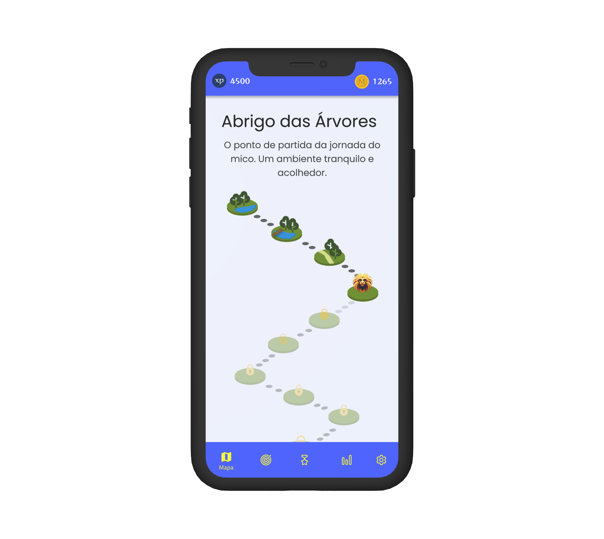

Estudante de ADS · Design de Produto · UX/UI · Gestão de Projetos
Estudante de Análise e Desenvolvimento de Sistemas na UCB, com experiência prática em liderança de projetos, prototipagem no Figma e desenvolvimento de interfaces.
Liderei equipes multidisciplinares em projetos reais com parceiros como Banco do Brasil e Porto Digital, conduzindo da concepção à apresentação para stakeholders.
Tenho interesse na interseção entre tecnologia e experiência do usuário — onde o problema humano encontra a solução digital.
Aplicativo de educação financeira para microempreendedores, desenvolvido em parceria com o Banco do Brasil e Porto Digital. Liderei uma equipe de 6 pessoas, aplicando metodologias ágeis e entregando 100% das demandas no prazo.

Protótipo de app para mapeamento de focos de poluição urbana. Apliquei boas práticas de UX/UI e apresentei para stakeholders estratégicos.
Site de quiz interativo onde usuários descobrem qual vilão de filmes se assemelha à sua personalidade.
Ensinei mais de 30 idosos a utilizar ferramentas digitais, adaptando conteúdos para diferentes níveis de conhecimento.
Estou buscando estágio em UX/UI, Produto ou Desenvolvimento Android. Manda uma mensagem!